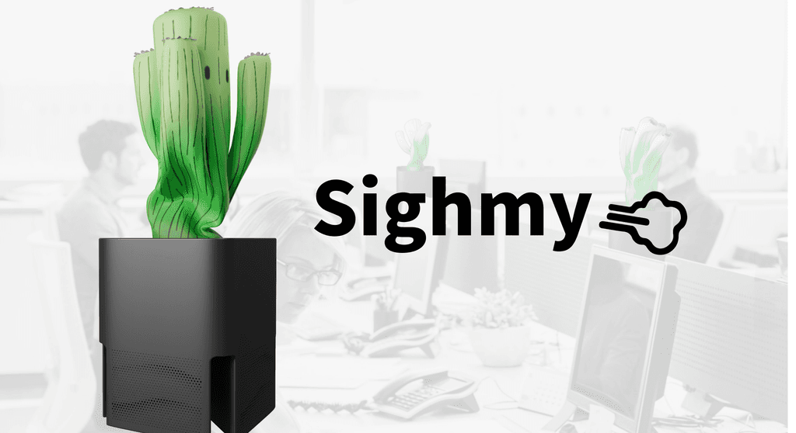

SIGHMY: Transforming Office Sighs into Positive Energy

Overview
SIGHMY (Sigh + Yummy) is a cactus-shaped smart device that detects workplace sighs using AI/audio processing and responds with subtle movements to dissipate tension and uplift the office atmosphere. It pairs with an employer dashboard built on the Lark collaborative platform.
Research Findings
- Survey of 57 people (ages 19–46+): 63.79% sigh due to physical fatigue, 56.9% due to high work pressure
- Hearing colleagues' sighs produces neutral or negative emotions (worry, sadness) in most people
- Office atmosphere declines as sigh frequency increases
- Only 6% of working professionals think employers value mental health
Technical Implementation
- Machine learning model trained on Edge Impulse using MFCC (Mel Frequency Cepstral Coefficients)
- Neural network classifier: 90.8% training accuracy, 89.30% test accuracy, F1 score 0.92
- Hardware: Arduino Nano 33 BLE (ML inference) + Arduino Uno (output), I2C protocol